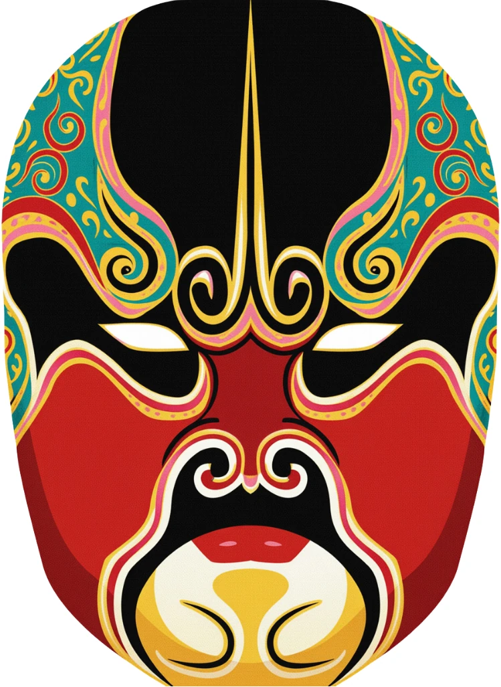
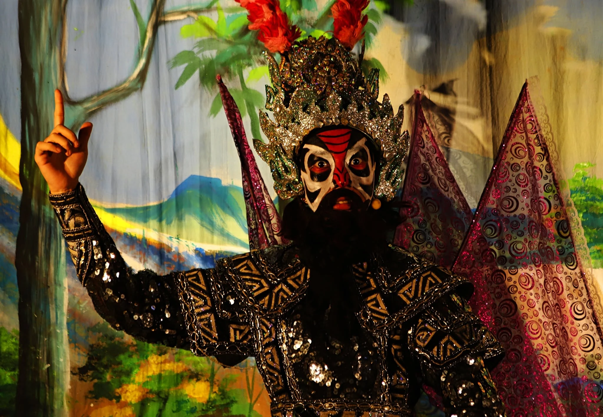
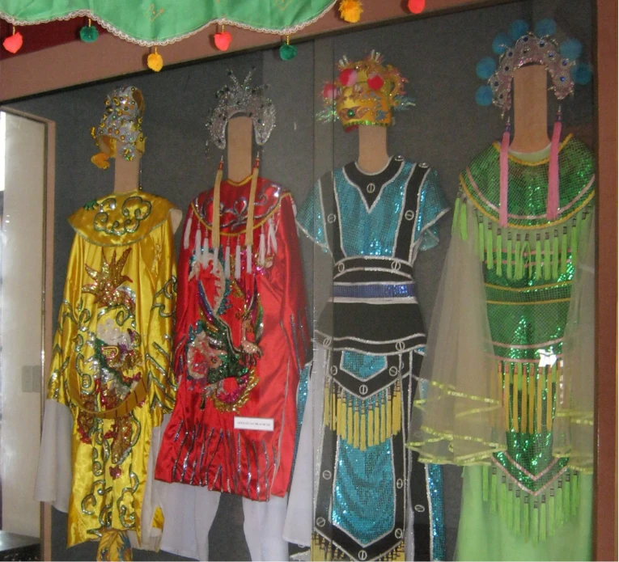
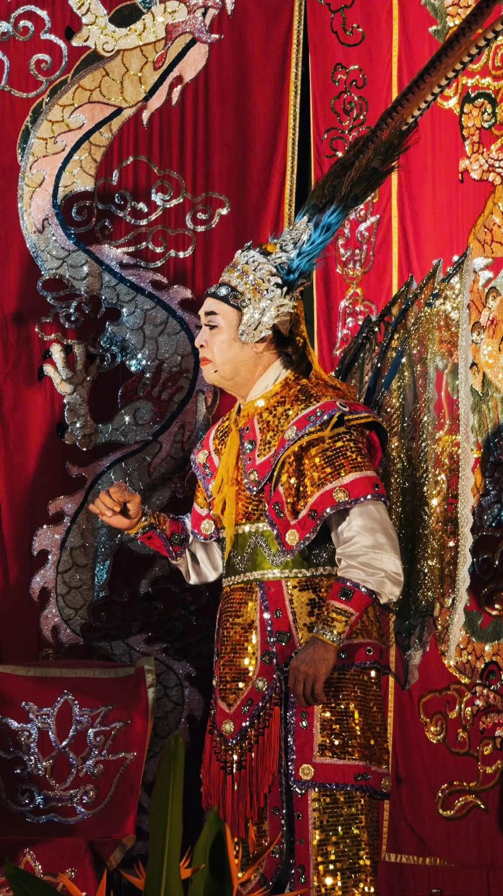
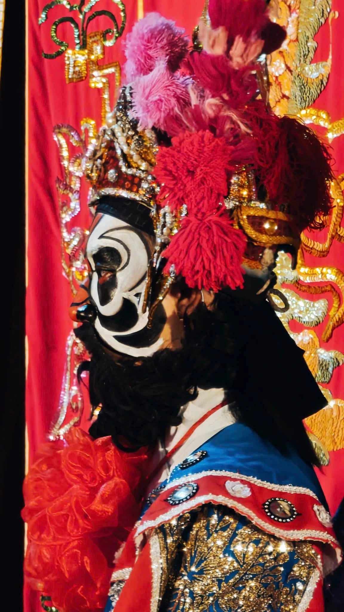
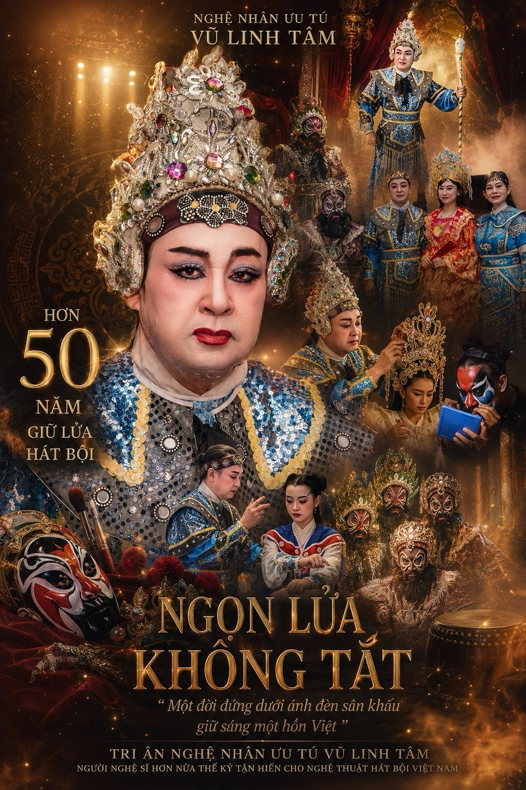
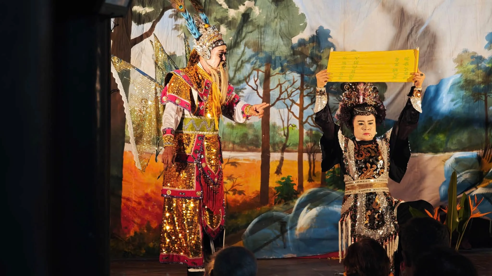

SẮC ĐỎ
TRIỂN LÃM SỐ & SÁCH LẬT DI SẢN · DIGITAL HERITAGE EXHIBITION
Khám phá nghệ thuật Hát Bội Việt Nam qua ngôn ngữ mặt nạ, phục trang, nhịp trống và câu chuyện gìn giữ di sản tại Vĩnh Long.
CHUYỂN ĐỘNG & NHỊP TRỐNG
Từ cái phất tay áo, bước đi khoan thai đến tiếng trống chiến dồn dập, mọi chuyển động trong Hát Bội đều được ước lệ hóa để mở ra cả một không gian tưởng tượng.




TƯƠNG TÁC · GIẢI MÃ SẮC DIỆN
Lọc khuôn mặt theo màu sắc để khám phá ý nghĩa từng lớp phấn, đặc điểm nhận dạng trên gương mặt và tuyến vai tương ứng trong Hát Bội.

TRẢI NGHIỆM SÁNG TẠO · XƯỞNG VẼ MẶT
Chọn dáng khuôn mặt, mẫu phối họa tiết và tô riêng từng vùng (Trán, Mắt, Má, Mũi, Miệng, Cằm) với 8 sắc màu truyền thống, sau đó tải về tác phẩm của riêng bạn.
Chạm trực tiếp vào Trán, Mắt, Má, Mũi, Miệng hoặc Cằm trên mặt nạ để tô màu đang chọn.
DẤU ẤN HÁT BỘI VĨNH LONG
Từ sân khấu Gánh Hát Bội Đồng Thinh tại Công Thần Miếu đến những nghệ nhân và khán giả hôm nay, mỗi cuộc gặp gỡ giúp câu chuyện Hát Bội tiếp tục được kể.
Tại Công Thần Miếu, nhóm có dịp thưởng thức trích đoạn biểu diễn và lắng nghe câu chuyện từ những người gắn bó với Hát Bội.

Hơn 50 năm giữ lửa Hát Bội — gương mặt được nhóm tri ân qua những tư liệu và hình ảnh về hành trình gắn bó với Hát Bội tại Vĩnh Long.

Cháu nội Nghệ nhân Ưu tú Vũ Linh Tâm tiếp nối ngọn lửa nghề của gia đình tại Gánh Hát Bội Đồng Thinh.

Những khoảnh khắc biểu diễn và giao lưu cho thấy di sản vẫn có thể chạm đến khán giả qua những trải nghiệm gần gũi.
Hình ảnh được ghi nhận trong chuyến tìm hiểu Hát Bội Vĩnh Long của nhóm.
GIỮ HỒN · ĐỔI HÌNH
Đổi cách kể để di sản đến gần hơn với người trẻ, nhưng luôn trân trọng tinh thần và tiếng nói của những người đang thực hành di sản.
TIẾNG NÓI NGƯỜI XEM
Một lời chia sẻ, một câu hỏi hay một góp ý đều có thể giúp câu chuyện Hát Bội được kể tiếp.
Tư liệu hình ảnh và video do nhóm thực hiện cung cấp. Nội dung về Hát Bội Vĩnh Long và Gánh Hát Bội Đồng Thinh cần được đối chiếu với tư liệu địa phương và ý kiến nghệ nhân trước khi xuất bản chính thức.